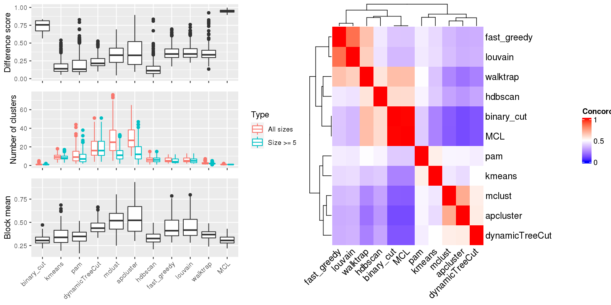

Figure 1.Compare clustering results. Left panel: The difference score, number of clusters and the block mean of different clusterings. Right panel: Concordance between clustering methods. The concordance measures how similar two clusterings are. The definition of the concordance score can be found here.

Table 1.Number of clusters identified by each clustering method. Numbers in the table indicate the number of clusters. The numbers inside the parentheses are the number of clusters with size >= 5.
| ID | binary_cut | kmeans | pam | dynamicTreeCut | mclust | apcluster | hdbscan | fast_greedy | louvain | walktrap | MCL | Details |
|---|---|---|---|---|---|---|---|---|---|---|---|---|
| E-GEOD-101794_g2_g1 | 1(1) | 11(11) | 2(2) | 46(46) | 45(29) | 54(40) | 9(9) | 6(4) | 4(3) | 1(1) | 1(1) | view |
| E-GEOD-10311_A-AFFY-44_g6_g4 | 1(1) | 7(6) | 11(6) | 12(12) | 20(7) | 27(6) | 3(3) | 7(6) | 5(5) | 2(2) | 1(1) | view |
| E-GEOD-10718_A-AFFY-44_g4_g3 | 1(1) | 10(7) | 9(7) | 10(10) | 18(5) | 20(6) | 4(4) | 10(10) | 9(9) | 3(3) | 1(1) | view |
| E-GEOD-10718_A-AFFY-44_g5_g6 | 1(1) | 8(8) | 13(10) | 17(17) | 26(11) | 27(11) | 6(6) | 10(10) | 11(10) | 2(2) | 1(1) | view |
| E-GEOD-11285_A-AFFY-44_g3_g4 | 1(1) | 7(7) | 7(7) | 10(10) | 14(9) | 20(5) | 5(5) | 8(7) | 8(7) | 2(2) | 1(1) | view |
| E-GEOD-11348_A-AFFY-44_g6_g3 | 1(1) | 14(13) | 2(2) | 40(40) | 63(24) | 49(31) | 7(7) | 6(4) | 5(5) | 2(2) | 1(1) | view |
| E-GEOD-11408_A-AFFY-1_g1_g2 | 1(1) | 11(10) | 3(3) | 36(36) | 62(22) | 47(32) | 13(13) | 5(3) | 4(4) | 2(2) | 1(1) | view |
| E-GEOD-11783_A-AFFY-44_g1_g2 | 1(1) | 8(8) | 2(2) | 19(19) | 33(11) | 31(14) | 5(5) | 7(6) | 7(7) | 2(2) | 1(1) | view |
| E-GEOD-11839_A-AFFY-44_g2_g1 | 1(1) | 4(4) | 7(6) | 11(10) | 13(6) | 21(6) | 3(3) | 10(8) | 9(7) | 5(3) | 1(1) | view |
| E-GEOD-11886_A-AFFY-44_g3_g1 | 1(1) | 7(7) | 12(11) | 14(14) | 25(13) | 22(12) | 7(7) | 6(5) | 6(6) | 2(2) | 1(1) | view |
| E-GEOD-11903_A-AFFY-37_g7_g10 | 1(1) | 7(7) | 10(8) | 11(11) | 19(9) | 23(10) | 4(4) | 5(5) | 5(5) | 2(2) | 1(1) | view |
| E-GEOD-11903_A-AFFY-37_g7_g9 | 1(1) | 12(10) | 23(19) | 25(25) | 46(16) | 39(22) | 6(6) | 4(3) | 3(3) | 2(2) | 1(1) | view |
| E-GEOD-11919_A-AFFY-44_g1_g2 | 1(1) | 8(7) | 7(6) | 8(8) | 14(7) | 16(6) | 7(7) | 9(8) | 9(8) | 5(2) | 1(1) | view |
| E-GEOD-11919_A-AFFY-44_g1_g3 | 1(1) | 6(5) | 6(5) | 7(7) | 12(5) | 13(6) | 5(5) | 9(7) | 8(7) | 3(2) | 1(1) | view |
| E-GEOD-12265_A-AFFY-44_g1_g4 | 1(1) | 6(5) | 6(6) | 8(8) | 14(6) | 15(6) | 3(3) | 7(5) | 5(5) | 3(3) | 1(1) | view |
| E-GEOD-12773_A-AFFY-44_g1_g2 | 1(1) | 6(6) | 7(5) | 8(8) | 14(6) | 15(7) | 3(3) | 5(3) | 4(3) | 2(2) | 1(1) | view |
| E-GEOD-12791_A-AFFY-33_g3_g1 | 1(1) | 9(9) | 13(9) | 17(17) | 23(10) | 26(14) | 7(7) | 4(3) | 3(2) | 2(2) | 1(1) | view |
| E-GEOD-12791_A-AFFY-33_g3_g2 | 1(1) | 9(9) | 23(18) | 24(24) | 37(14) | 34(20) | 11(11) | 3(2) | 3(3) | 2(2) | 1(1) | view |
| E-GEOD-12791_A-AFFY-33_g4_g2 | 1(1) | 11(9) | 14(9) | 16(16) | 28(14) | 24(13) | 6(6) | 4(4) | 4(4) | 2(2) | 1(1) | view |
| E-GEOD-13637_A-AFFY-44_g1_g2 | 1(1) | 4(4) | 8(7) | 10(10) | 16(7) | 17(7) | 5(5) | 7(7) | 6(6) | 2(2) | 1(1) | view |
| E-GEOD-13637_A-AFFY-44_g1_g9 | 1(1) | 5(4) | 6(4) | 6(6) | 12(3) | 16(2) | 4(4) | 10(9) | 9(8) | 2(2) | 1(1) | view |
| E-GEOD-13637_A-AFFY-44_g5_g1 | 1(1) | 7(7) | 7(6) | 9(9) | 12(6) | 16(6) | 5(5) | 7(7) | 7(7) | 2(2) | 1(1) | view |
| E-GEOD-13762_A-AFFY-44_g3_g2 | 1(1) | 6(5) | 7(6) | 9(9) | 15(5) | 17(6) | 3(3) | 5(5) | 5(5) | 2(2) | 1(1) | view |
| E-GEOD-13763_A-AFFY-44_g1_g2 | 1(1) | 6(6) | 6(6) | 8(7) | 12(6) | 13(5) | 4(4) | 7(7) | 7(7) | 5(4) | 1(1) | view |
| E-GEOD-13763_A-AFFY-44_g1_g4 | 1(1) | 6(5) | 5(5) | 6(6) | 8(4) | 12(6) | 3(2) | 10(5) | 10(6) | 4(3) | 1(1) | view |
| E-GEOD-13909_A-AFFY-44_g3_g4 | 1(1) | 6(6) | 20(16) | 22(22) | 36(16) | 33(21) | 9(9) | 3(3) | 4(4) | 2(2) | 1(1) | view |
| E-GEOD-1417_A-AFFY-33_g1_g2 | 1(1) | 9(7) | 6(5) | 7(7) | 11(5) | 12(7) | 6(6) | 10(6) | 9(6) | 7(4) | 1(1) | view |
| E-GEOD-14580_A-AFFY-44_g2_g3 | 1(1) | 9(9) | 26(21) | 30(30) | 52(20) | 39(27) | 3(3) | 4(3) | 3(3) | 2(2) | 1(1) | view |
| E-GEOD-15811_A-AFFY-44_g1_g2 | 1(1) | 7(7) | 13(10) | 16(16) | 27(12) | 24(10) | 5(5) | 3(3) | 3(3) | 2(2) | 1(1) | view |
| E-GEOD-15811_A-AFFY-44_g1_g3 | 1(1) | 10(9) | 3(3) | 24(24) | 40(15) | 32(17) | 5(5) | 4(2) | 3(2) | 2(2) | 1(1) | view |
| E-GEOD-15811_A-AFFY-44_g1_g4 | 1(1) | 11(10) | 3(3) | 26(26) | 40(16) | 32(23) | 6(6) | 5(2) | 2(2) | 2(2) | 1(1) | view |
| E-GEOD-15893_A-AFFY-44_g3_g2 | 1(1) | 8(8) | 15(10) | 18(18) | 26(11) | 31(14) | 6(6) | 4(3) | 4(3) | 2(2) | 1(1) | view |
| E-GEOD-15947_A-AFFY-44_g1_g2 | 1(1) | 11(11) | 3(3) | 21(21) | 32(17) | 33(20) | 3(3) | 4(3) | 4(4) | 2(2) | 1(1) | view |
| E-GEOD-16066_A-AFFY-44_g2_g1 | 1(1) | 8(6) | 8(5) | 9(9) | 17(6) | 17(8) | 3(3) | 6(5) | 7(5) | 2(2) | 1(1) | view |
| E-GEOD-16238_A-AFFY-44_g2_g1 | 1(1) | 10(9) | 12(8) | 12(12) | 24(9) | 26(12) | 4(4) | 9(8) | 9(8) | 4(3) | 1(1) | view |
| E-GEOD-16837_A-AFFY-44_g22_g11 | 1(1) | 10(9) | 11(7) | 15(15) | 21(8) | 23(8) | 6(6) | 4(4) | 5(5) | 2(2) | 1(1) | view |
| E-GEOD-16837_A-AFFY-44_g22_g21 | 1(1) | 9(8) | 11(8) | 14(14) | 21(10) | 19(10) | 6(6) | 6(6) | 6(6) | 3(3) | 1(1) | view |
| E-GEOD-16837_A-AFFY-44_g22_g29 | 1(1) | 9(8) | 13(10) | 16(16) | 26(12) | 25(13) | 4(4) | 5(4) | 5(5) | 2(2) | 1(1) | view |
| E-GEOD-16837_A-AFFY-44_g22_g3 | 1(1) | 8(7) | 12(9) | 14(14) | 23(12) | 26(10) | 5(5) | 4(4) | 4(4) | 2(2) | 1(1) | view |
| E-GEOD-16837_A-AFFY-44_g22_g4 | 1(1) | 9(9) | 11(8) | 15(15) | 23(11) | 22(12) | 6(6) | 5(4) | 5(5) | 2(2) | 1(1) | view |
| E-GEOD-16879_A-AFFY-44_g13_g1 | 1(1) | 13(12) | 2(2) | 46(46) | 40(28) | 58(37) | 10(10) | 6(4) | 4(4) | 1(1) | 1(1) | view |
| E-GEOD-16879_A-AFFY-44_g13_g10 | 1(1) | 8(8) | 24(21) | 29(29) | 34(22) | 39(23) | 11(11) | 7(3) | 5(5) | 2(2) | 1(1) | view |
| E-GEOD-16879_A-AFFY-44_g13_g12 | 1(1) | 9(8) | 3(3) | 23(23) | 28(17) | 38(23) | 8(8) | 6(3) | 3(3) | 2(2) | 1(1) | view |
| E-GEOD-17347_A-AFFY-44_g4_g2 | 1(1) | 8(8) | 22(17) | 25(25) | 45(17) | 40(22) | 5(5) | 6(4) | 4(4) | 2(2) | 1(1) | view |
| E-GEOD-18791_A-AFFY-44_g11_g2 | 1(1) | 7(7) | 11(10) | 12(12) | 21(12) | 19(12) | 7(7) | 4(3) | 4(3) | 2(2) | 1(1) | view |
| E-GEOD-19018_A-AFFY-44_g1_g3 | 1(1) | 12(9) | 2(2) | 16(16) | 18(12) | 31(13) | 3(3) | 9(8) | 6(6) | 3(2) | 1(1) | view |
| E-GEOD-19018_A-AFFY-44_g2_g1 | 1(1) | 8(5) | 7(4) | 7(7) | 14(5) | 14(6) | 3(3) | 7(7) | 7(7) | 2(2) | 1(1) | view |
| E-GEOD-19018_A-AFFY-44_g2_g4 | 1(1) | 9(8) | 2(2) | 22(22) | 35(10) | 34(14) | 5(5) | 6(5) | 6(6) | 3(2) | 1(1) | view |
| E-GEOD-19249_A-AFFY-37_g6_g5 | 1(1) | 6(6) | 6(5) | 9(9) | 13(5) | 20(4) | 1(1) | 9(9) | 9(9) | 4(2) | 1(1) | view |
| E-GEOD-19279_A-AFFY-33_g2_g4 | 1(1) | 9(9) | 19(14) | 21(21) | 28(12) | 34(13) | 5(5) | 5(3) | 4(4) | 3(2) | 1(1) | view |
| E-GEOD-19639_A-AFFY-44_g6_g4 | 1(1) | 7(7) | 6(5) | 9(8) | 8(7) | 14(6) | 4(3) | 9(8) | 10(8) | 4(3) | 1(1) | view |
| E-GEOD-19650_A-AFFY-44_g4_g1 | 1(1) | 7(6) | 7(7) | 8(8) | 10(6) | 11(7) | 5(5) | 5(4) | 5(5) | 2(2) | 1(1) | view |
| E-GEOD-19650_A-AFFY-44_g4_g2 | 1(1) | 6(5) | 6(4) | 7(7) | 9(5) | 13(5) | 5(5) | 10(5) | 10(5) | 2(2) | 1(1) | view |
| E-GEOD-20505_A-AFFY-44_g7_g4 | 1(1) | 8(8) | 17(12) | 20(19) | 33(11) | 31(12) | 4(4) | 5(2) | 3(3) | 2(2) | 1(1) | view |
| E-GEOD-20505_A-AFFY-44_g7_g5 | 1(1) | 6(6) | 15(13) | 19(19) | 27(16) | 37(16) | 6(6) | 5(3) | 3(3) | 2(2) | 1(1) | view |
| E-GEOD-20505_A-AFFY-44_g7_g6 | 1(1) | 8(8) | 24(19) | 25(25) | 34(18) | 37(19) | 9(9) | 5(2) | 5(4) | 3(2) | 1(1) | view |
| E-GEOD-22278_A-AFFY-41_g5_g1 | 1(1) | 7(6) | 9(6) | 10(10) | 19(7) | 20(5) | 3(3) | 6(5) | 6(6) | 2(2) | 1(1) | view |
| E-GEOD-22385_A-AFFY-37_g1_g2 | 4(2) | 6(6) | 2(2) | 9(9) | 16(8) | 20(5) | 3(2) | 9(8) | 9(8) | 7(2) | 1(1) | view |
| E-GEOD-22529_A-AFFY-33_g2_g1 | 1(1) | 7(6) | 6(6) | 6(6) | 10(5) | 13(6) | 3(3) | 7(6) | 7(6) | 3(3) | 1(1) | view |
| E-GEOD-22611_A-AFFY-44_g1_g6 | 1(1) | 6(5) | 6(6) | 7(7) | 11(5) | 15(5) | 3(3) | 10(7) | 10(8) | 4(1) | 1(1) | view |
| E-GEOD-22611_A-AFFY-44_g2_g3 | 1(1) | 6(5) | 7(6) | 9(8) | 13(4) | 17(5) | 3(3) | 11(9) | 10(9) | 7(2) | 1(1) | view |
| E-GEOD-22779_A-AFFY-44_g4_g1 | 1(1) | 8(8) | 16(12) | 21(21) | 22(11) | 27(14) | 3(3) | 5(5) | 6(6) | 3(3) | 1(1) | view |
| E-GEOD-22779_A-AFFY-44_g4_g3 | 1(1) | 9(8) | 16(12) | 18(18) | 23(10) | 27(11) | 3(3) | 4(3) | 4(3) | 2(2) | 1(1) | view |
| E-GEOD-23764_A-AFFY-44_g4_g1 | 4(1) | 7(6) | 6(3) | 8(8) | 12(4) | 18(1) | 1(1) | 10(7) | 11(9) | 3(1) | 1(1) | view |
| E-GEOD-23930_A-AGIL-28_g2_g4 | 1(1) | 6(6) | 7(6) | 8(8) | 14(6) | 16(8) | 5(5) | 11(10) | 10(10) | 6(5) | 1(1) | view |
| E-GEOD-24592_A-AFFY-37_g1_g3 | 1(1) | 7(7) | 9(8) | 10(10) | 18(10) | 19(10) | 5(5) | 10(8) | 10(9) | 4(3) | 1(1) | view |
| E-GEOD-24592_A-AFFY-37_g1_g5 | 1(1) | 10(8) | 10(9) | 11(11) | 18(6) | 19(10) | 7(7) | 9(8) | 9(9) | 7(5) | 1(1) | view |
| E-GEOD-24592_A-AFFY-37_g2_g6 | 1(1) | 7(7) | 9(6) | 11(11) | 17(7) | 22(6) | 5(5) | 8(8) | 9(9) | 5(3) | 1(1) | view |
| E-GEOD-24592_A-AFFY-37_g4_g3 | 1(1) | 6(6) | 10(9) | 13(13) | 20(6) | 22(8) | 6(6) | 8(8) | 8(8) | 2(2) | 1(1) | view |
| E-GEOD-24592_A-AFFY-37_g6_g5 | 1(1) | 9(9) | 16(15) | 17(17) | 29(15) | 35(14) | 5(5) | 8(7) | 8(8) | 1(1) | 1(1) | view |
| E-GEOD-25412_A-AFFY-141_g3_g1 | 1(1) | 6(6) | 6(5) | 8(8) | 11(6) | 16(6) | 6(6) | 12(7) | 11(8) | 3(2) | 1(1) | view |
| E-GEOD-26370_A-AFFY-37_g4_g3 | 1(1) | 9(7) | 9(7) | 12(12) | 21(9) | 23(7) | 5(5) | 11(10) | 9(9) | 5(4) | 1(1) | view |
| E-GEOD-26656_A-AFFY-44_g3_g1 | 1(1) | 13(13) | 29(23) | 36(36) | 53(20) | 47(34) | 15(15) | 4(3) | 3(3) | 2(2) | 1(1) | view |
| E-GEOD-26656_A-AFFY-44_g4_g2 | 1(1) | 8(6) | 6(6) | 5(5) | 12(5) | 14(6) | 4(4) | 9(8) | 10(6) | 3(3) | 1(1) | view |
| E-GEOD-28784_A-AFFY-33_g2_g1 | 1(1) | 12(12) | 21(17) | 25(25) | 41(20) | 37(25) | 9(9) | 5(4) | 3(3) | 2(2) | 1(1) | view |
| E-GEOD-28784_A-AFFY-33_g2_g3 | 1(1) | 9(7) | 11(10) | 13(13) | 20(10) | 24(10) | 8(8) | 8(7) | 8(7) | 2(2) | 1(1) | view |
| E-GEOD-29137_A-AFFY-44_g4_g2 | 1(1) | 9(8) | 11(9) | 13(13) | 18(12) | 21(13) | 7(7) | 6(6) | 7(7) | 2(2) | 1(1) | view |
| E-GEOD-29137_A-AFFY-44_g4_g3 | 1(1) | 8(8) | 12(11) | 14(14) | 23(12) | 24(11) | 7(7) | 4(4) | 4(4) | 2(2) | 1(1) | view |
| E-GEOD-30531_A-AFFY-44_g4_g9 | 1(1) | 11(11) | 23(20) | 23(23) | 42(13) | 38(22) | 9(9) | 4(4) | 4(4) | 2(2) | 1(1) | view |
| E-GEOD-30784_A-AFFY-44_g2_g1 | 1(1) | 6(4) | 6(4) | 7(7) | 11(4) | 17(2) | 3(3) | 11(8) | 10(8) | 3(2) | 1(1) | view |
| E-GEOD-31193_A-AFFY-44_g2_g5 | 1(1) | 8(5) | 6(4) | 7(7) | 11(4) | 13(6) | 3(3) | 5(5) | 5(5) | 2(2) | 1(1) | view |
| E-GEOD-3183_A-AFFY-33_g4_g2 | 1(1) | 8(7) | 17(13) | 21(21) | 33(14) | 29(13) | 9(9) | 5(5) | 6(6) | 2(2) | 1(1) | view |
| E-GEOD-3307_A-AFFY-33_g1_g13 | 1(1) | 10(9) | 23(18) | 26(26) | 45(20) | 34(20) | 7(7) | 4(2) | 3(3) | 3(2) | 1(1) | view |
| E-GEOD-33294_g1_g2 | 1(1) | 12(11) | 16(12) | 17(17) | 28(15) | 34(13) | 4(4) | 5(3) | 5(4) | 2(2) | 1(1) | view |
| E-GEOD-33643_A-AFFY-44_g7_g4 | 1(1) | 8(8) | 20(17) | 24(24) | 31(13) | 32(16) | 3(3) | 3(3) | 3(3) | 2(2) | 1(1) | view |
| E-GEOD-33643_A-AFFY-44_g7_g5 | 1(1) | 9(9) | 2(2) | 23(23) | 48(17) | 39(21) | 4(4) | 5(2) | 3(3) | 2(2) | 1(1) | view |
| E-GEOD-33643_A-AFFY-44_g7_g8 | 1(1) | 13(13) | 30(25) | 38(38) | 47(20) | 46(28) | 3(3) | 6(4) | 4(4) | 2(2) | 1(1) | view |
| E-GEOD-33950_A-AFFY-44_g1_g2 | 1(1) | 8(7) | 6(5) | 7(7) | 11(7) | 14(7) | 4(3) | 9(6) | 8(7) | 2(2) | 1(1) | view |
| E-GEOD-34635_A-AFFY-44_g1_g5 | 1(1) | 5(5) | 7(5) | 7(7) | 14(6) | 17(5) | 4(3) | 8(7) | 8(7) | 2(2) | 1(1) | view |
| E-GEOD-35198_A-AFFY-44_g2_g1 | 1(1) | 9(9) | 16(13) | 19(19) | 25(12) | 32(16) | 7(7) | 6(6) | 9(9) | 1(1) | 1(1) | view |
| E-GEOD-36287_A-AFFY-44_g7_g4 | 1(1) | 11(11) | 8(7) | 12(12) | 17(9) | 21(7) | 3(3) | 5(4) | 4(4) | 2(2) | 1(1) | view |
| E-GEOD-36287_A-AFFY-44_g7_g5 | 1(1) | 7(6) | 7(7) | 8(8) | 14(5) | 16(5) | 4(4) | 8(6) | 8(5) | 4(4) | 1(1) | view |
| E-GEOD-36761_g2_g1 | 1(1) | 10(6) | 7(5) | 10(10) | 14(6) | 14(7) | 4(4) | 6(6) | 6(6) | 4(3) | 1(1) | view |
| E-GEOD-3678_A-AFFY-44_g1_g2 | 1(1) | 7(7) | 15(12) | 14(14) | 30(13) | 33(12) | 7(7) | 5(4) | 5(4) | 2(2) | 1(1) | view |
| E-GEOD-39121_g1_g2 | 1(1) | 9(9) | 12(11) | 13(13) | 24(10) | 27(10) | 6(6) | 5(3) | 3(3) | 2(2) | 1(1) | view |
| E-GEOD-39843_A-AFFY-44_g2_g1 | 1(1) | 12(12) | 22(17) | 24(24) | 31(15) | 32(25) | 4(4) | 5(4) | 5(5) | 2(2) | 1(1) | view |
| E-GEOD-39843_A-AFFY-44_g4_g3 | 1(1) | 11(11) | 20(17) | 22(22) | 39(11) | 30(17) | 8(8) | 4(3) | 4(4) | 2(2) | 1(1) | view |
| E-GEOD-40613_A-AFFY-44_g4_g3 | 1(1) | 14(14) | 2(2) | 31(31) | 45(20) | 48(27) | 7(7) | 3(3) | 3(3) | 2(2) | 1(1) | view |
| E-GEOD-40885_A-AFFY-44_g2_g1 | 1(1) | 13(13) | 2(2) | 51(51) | 57(32) | 61(40) | 10(10) | 4(3) | 4(3) | 2(2) | 1(1) | view |
| E-GEOD-40986_A-AFFY-44_g2_g1 | 1(1) | 10(10) | 13(11) | 15(15) | 23(13) | 26(12) | 7(7) | 8(8) | 8(8) | 3(2) | 1(1) | view |
| E-GEOD-41405_A-AFFY-141_g1_g7 | 1(1) | 4(4) | 7(4) | 7(7) | 13(5) | 18(5) | 3(3) | 11(8) | 12(8) | 2(1) | 1(1) | view |
| E-GEOD-41586_g3_g1 | 1(1) | 3(3) | 3(3) | 5(5) | 10(5) | 10(4) | 4(4) | 8(5) | 8(5) | 3(3) | 1(1) | view |
| E-GEOD-41663_A-AFFY-44_g6_g2 | 1(1) | 7(7) | 2(2) | 17(17) | 29(12) | 23(16) | 9(9) | 4(2) | 3(2) | 2(2) | 1(1) | view |
| E-GEOD-41678_A-AFFY-141_g3_g2 | 1(1) | 8(7) | 13(10) | 15(15) | 26(10) | 25(9) | 7(7) | 5(3) | 5(4) | 2(2) | 1(1) | view |
| E-GEOD-41745_g2_g1 | 1(1) | 13(10) | 2(2) | 15(15) | 21(10) | 22(11) | 5(5) | 3(2) | 3(2) | 4(2) | 1(1) | view |
| E-GEOD-4183_A-AFFY-44_g3_g2 | 1(1) | 14(13) | 2(2) | 31(31) | 53(14) | 42(23) | 9(9) | 4(3) | 6(5) | 2(2) | 1(1) | view |
| E-GEOD-42619_A-AGIL-28_g8_g2 | 1(1) | 9(9) | 10(8) | 13(13) | 20(10) | 25(8) | 6(6) | 11(11) | 10(10) | 5(4) | 1(1) | view |
| E-GEOD-42781_A-AFFY-141_g2_g3 | 1(1) | 11(10) | 10(8) | 11(11) | 15(9) | 24(11) | 3(3) | 7(7) | 10(9) | 4(3) | 1(1) | view |
| E-GEOD-43288_A-AFFY-33_g2_g3 | 1(1) | 11(10) | 23(18) | 23(23) | 40(16) | 39(16) | 5(5) | 5(2) | 3(3) | 3(2) | 1(1) | view |
| E-GEOD-43552_A-AFFY-44_g2_g1 | 1(1) | 8(8) | 12(9) | 13(13) | 18(12) | 26(9) | 4(4) | 7(7) | 10(9) | 3(2) | 1(1) | view |
| E-GEOD-44408_A-AFFY-37_g1_g3 | 1(1) | 9(8) | 11(11) | 12(12) | 20(7) | 20(10) | 4(4) | 8(8) | 7(7) | 3(2) | 1(1) | view |
| E-GEOD-45757_A-AFFY-37_g11_g10 | 1(1) | 7(7) | 9(8) | 13(13) | 17(9) | 18(10) | 7(7) | 9(8) | 8(7) | 5(3) | 1(1) | view |
| E-GEOD-45757_A-AFFY-37_g13_g12 | 1(1) | 12(9) | 10(7) | 12(12) | 21(9) | 22(10) | 7(7) | 9(9) | 9(8) | 2(2) | 1(1) | view |
| E-GEOD-45757_A-AFFY-37_g17_g16 | 1(1) | 8(8) | 13(12) | 17(17) | 24(10) | 35(8) | 6(6) | 10(10) | 10(10) | 3(2) | 1(1) | view |
| E-GEOD-45757_A-AFFY-37_g19_g18 | 1(1) | 11(11) | 3(3) | 31(31) | 42(18) | 40(28) | 6(6) | 4(3) | 4(3) | 2(2) | 1(1) | view |
| E-GEOD-45757_A-AFFY-37_g21_g20 | 1(1) | 13(12) | 2(2) | 28(28) | 37(18) | 43(19) | 9(9) | 8(5) | 8(8) | 2(1) | 1(1) | view |
| E-GEOD-45757_A-AFFY-37_g23_g22 | 1(1) | 7(6) | 7(6) | 11(10) | 12(5) | 21(4) | 4(4) | 8(8) | 8(7) | 4(3) | 1(1) | view |
| E-GEOD-45757_A-AFFY-37_g29_g28 | 1(1) | 10(9) | 12(11) | 15(15) | 26(9) | 27(11) | 6(6) | 6(6) | 6(5) | 2(2) | 1(1) | view |
| E-GEOD-45757_A-AFFY-37_g37_g36 | 1(1) | 11(10) | 23(20) | 26(26) | 45(15) | 42(24) | 6(6) | 4(4) | 3(2) | 2(2) | 1(1) | view |
| E-GEOD-45757_A-AFFY-37_g41_g40 | 1(1) | 7(6) | 8(7) | 9(9) | 16(7) | 20(5) | 5(5) | 10(7) | 10(7) | 2(2) | 1(1) | view |
| E-GEOD-45757_A-AFFY-37_g43_g42 | 1(1) | 11(10) | 16(12) | 20(20) | 25(14) | 33(15) | 5(5) | 8(7) | 7(7) | 1(1) | 1(1) | view |
| E-GEOD-45757_A-AFFY-37_g45_g44 | 1(1) | 10(10) | 17(14) | 23(23) | 43(15) | 40(20) | 9(9) | 3(3) | 4(4) | 2(2) | 1(1) | view |
| E-GEOD-45757_A-AFFY-37_g5_g4 | 1(1) | 10(10) | 3(3) | 31(31) | 8(8) | 42(28) | 6(6) | 4(2) | 2(2) | 2(2) | 1(1) | view |
| E-GEOD-45757_A-AFFY-37_g7_g6 | 1(1) | 6(5) | 5(4) | 7(7) | 10(4) | 13(5) | 5(5) | 9(6) | 9(6) | 2(2) | 1(1) | view |
| E-GEOD-4600_A-AFFY-44_g2_g1 | 1(1) | 5(5) | 9(6) | 10(10) | 18(7) | 21(8) | 5(5) | 12(10) | 12(10) | 3(1) | 1(1) | view |
| E-GEOD-46513_g2_g1 | 1(1) | 12(12) | 16(15) | 19(19) | 31(12) | 26(17) | 8(8) | 3(2) | 3(2) | 2(2) | 1(1) | view |
| E-GEOD-46884_A-AFFY-37_g5_g4 | 1(1) | 10(9) | 13(9) | 15(15) | 12(8) | 22(12) | 4(4) | 3(3) | 5(4) | 2(2) | 1(1) | view |
| E-GEOD-48121_A-AFFY-37_g3_g2 | 1(1) | 6(6) | 6(5) | 9(9) | 13(6) | 12(8) | 6(6) | 10(8) | 11(7) | 5(4) | 1(1) | view |
| E-GEOD-48258_A-AFFY-44_g3_g2 | 1(1) | 9(9) | 15(12) | 19(19) | 20(12) | 24(13) | 4(4) | 4(2) | 4(2) | 2(2) | 1(1) | view |
| E-GEOD-48786_A-AFFY-44_g2_g1 | 1(1) | 9(8) | 21(19) | 25(25) | 35(16) | 36(18) | 8(8) | 3(3) | 4(4) | 2(2) | 1(1) | view |
| E-GEOD-4883_A-AFFY-44_g1_g2 | 1(1) | 12(12) | 3(3) | 44(44) | 76(26) | 55(41) | 9(9) | 5(4) | 2(2) | 2(2) | 1(1) | view |
| E-GEOD-49016_A-AGIL-28_g2_g3 | 1(1) | 12(12) | 2(2) | 33(33) | 29(16) | 44(27) | 9(9) | 5(3) | 3(3) | 2(2) | 1(1) | view |
| E-GEOD-50693_A-AFFY-37_g1_g4 | 1(1) | 7(7) | 7(5) | 9(9) | 13(6) | 16(6) | 4(4) | 11(7) | 10(8) | 4(4) | 1(1) | view |
| E-GEOD-50693_A-AFFY-37_g5_g4 | 1(1) | 6(6) | 11(9) | 13(13) | 23(10) | 26(8) | 5(5) | 10(10) | 9(9) | 5(4) | 1(1) | view |
| E-GEOD-50694_A-AFFY-37_g5_g4 | 1(1) | 11(10) | 9(8) | 12(12) | 17(9) | 21(7) | 6(6) | 12(10) | 11(10) | 3(2) | 1(1) | view |
| E-GEOD-50697_A-AFFY-44_g1_g2 | 1(1) | 8(6) | 11(8) | 14(14) | 22(9) | 26(7) | 3(3) | 6(6) | 7(7) | 5(3) | 1(1) | view |
| E-GEOD-51005_g2_g1 | 1(1) | 4(3) | 2(2) | 5(5) | 13(6) | 18(4) | 3(3) | 9(9) | 10(9) | 5(1) | 1(1) | view |
| E-GEOD-51704_A-AFFY-44_g10_g9 | 1(1) | 10(10) | 21(15) | 27(27) | 36(14) | 38(17) | 7(7) | 5(3) | 4(4) | 3(3) | 1(1) | view |
| E-GEOD-51704_A-AFFY-44_g12_g11 | 1(1) | 10(10) | 17(15) | 20(20) | 30(16) | 34(20) | 10(10) | 5(5) | 5(5) | 2(2) | 1(1) | view |
| E-GEOD-51878_g1_g2 | 1(1) | 9(9) | 29(23) | 32(32) | 5(5) | 43(23) | 9(9) | 6(4) | 5(4) | 2(2) | 1(1) | view |
| E-GEOD-52127_A-AFFY-44_g1_g2 | 1(1) | 7(7) | 14(11) | 14(14) | 26(10) | 24(12) | 4(4) | 5(4) | 4(4) | 2(2) | 1(1) | view |
| E-GEOD-52471_A-AFFY-37_g4_g3 | 1(1) | 13(12) | 2(2) | 22(22) | 36(13) | 35(18) | 9(9) | 6(6) | 9(8) | 3(2) | 1(1) | view |
| E-GEOD-5264_A-AFFY-44_g1_g7 | 1(1) | 7(7) | 16(13) | 19(19) | 31(15) | 26(16) | 8(8) | 4(2) | 3(2) | 2(2) | 1(1) | view |
| E-GEOD-5264_A-AFFY-44_g1_g8 | 1(1) | 7(7) | 6(6) | 9(9) | 14(7) | 17(7) | 6(6) | 9(7) | 8(8) | 2(2) | 1(1) | view |
| E-GEOD-52989_A-AFFY-33_g1_g2 | 1(1) | 11(10) | 28(19) | 29(29) | 32(21) | 40(24) | 11(11) | 5(3) | 4(3) | 2(2) | 1(1) | view |
| E-GEOD-53280_g2_g1 | 1(1) | 8(8) | 29(24) | 34(34) | 39(21) | 46(31) | 9(9) | 4(3) | 4(4) | 2(2) | 1(1) | view |
| E-GEOD-53965_A-AFFY-141_g2_g1 | 1(1) | 6(6) | 5(4) | 8(7) | 11(6) | 15(3) | 3(3) | 10(6) | 11(6) | 3(2) | 2(1) | view |
| E-GEOD-5418_A-AFFY-33_g3_g4 | 1(1) | 14(13) | 2(2) | 28(28) | 48(18) | 37(21) | 5(5) | 5(5) | 6(5) | 2(2) | 1(1) | view |
| E-GEOD-54846_g1_g2 | 1(1) | 12(12) | 23(18) | 27(27) | 47(16) | 39(19) | 9(9) | 4(4) | 4(4) | 2(2) | 1(1) | view |
| E-GEOD-55048_g1_g2 | 1(1) | 9(9) | 14(12) | 16(16) | 22(16) | 27(14) | 6(6) | 5(2) | 4(2) | 2(2) | 1(1) | view |
| E-GEOD-55123_g1_g2 | 1(1) | 11(11) | 22(17) | 28(28) | 39(21) | 39(24) | 7(7) | 4(4) | 5(5) | 2(2) | 1(1) | view |
| E-GEOD-55235_A-AFFY-33_g1_g2 | 1(1) | 7(7) | 15(13) | 18(18) | 30(16) | 29(14) | 5(5) | 3(3) | 3(3) | 2(2) | 1(1) | view |
| E-GEOD-55235_A-AFFY-33_g1_g3 | 1(1) | 10(10) | 16(13) | 19(19) | 31(13) | 32(14) | 3(3) | 4(4) | 4(4) | 5(2) | 1(1) | view |
| E-GEOD-55510_A-AFFY-44_g1_g2 | 1(1) | 12(12) | 2(2) | 28(28) | 45(20) | 47(30) | 9(9) | 3(3) | 4(4) | 2(2) | 1(1) | view |
| E-GEOD-56026_A-AFFY-44_g4_g1 | 1(1) | 9(9) | 2(2) | 44(44) | 70(32) | 56(37) | 9(9) | 5(5) | 4(4) | 2(2) | 1(1) | view |
| E-GEOD-56678_A-AGIL-28_g5_g2 | 1(1) | 11(11) | 32(25) | 34(34) | 45(24) | 48(30) | 3(3) | 4(2) | 5(4) | 2(2) | 1(1) | view |
| E-GEOD-56678_A-AGIL-28_g6_g3 | 1(1) | 12(12) | 3(3) | 39(39) | 51(20) | 49(32) | 7(7) | 5(4) | 4(4) | 2(2) | 1(1) | view |
| E-GEOD-56681_A-AFFY-33_g6_g5 | 1(1) | 10(10) | 2(2) | 27(27) | 42(15) | 35(19) | 6(6) | 4(3) | 4(3) | 2(2) | 1(1) | view |
| E-GEOD-56788_g2_g14 | 1(1) | 7(7) | 8(8) | 9(9) | 15(7) | 20(7) | 6(6) | 11(8) | 11(8) | 4(4) | 1(1) | view |
| E-GEOD-56825_A-AFFY-141_g1_g3 | 1(1) | 8(6) | 7(6) | 7(7) | 15(7) | 17(5) | 5(5) | 9(6) | 9(6) | 4(4) | 1(1) | view |
| E-GEOD-56825_A-AFFY-141_g1_g5 | 1(1) | 8(7) | 7(5) | 8(8) | 13(5) | 19(5) | 4(4) | 8(8) | 8(8) | 2(2) | 1(1) | view |
| E-GEOD-5741_A-AFFY-44_g1_g3 | 1(1) | 11(10) | 12(8) | 13(13) | 22(14) | 23(11) | 7(7) | 5(4) | 6(6) | 2(2) | 1(1) | view |
| E-GEOD-57463_A-AFFY-44_g2_g1 | 1(1) | 9(9) | 17(12) | 19(19) | 23(11) | 33(15) | 3(3) | 5(4) | 4(4) | 2(2) | 1(1) | view |
| E-GEOD-57488_g1_g2 | 1(1) | 8(8) | 14(12) | 16(16) | 22(12) | 31(15) | 5(5) | 6(6) | 6(6) | 3(3) | 1(1) | view |
| E-GEOD-57494_g1_g3 | 1(1) | 11(11) | 2(2) | 43(43) | 32(20) | 49(34) | 3(3) | 5(4) | 5(4) | 2(2) | 1(1) | view |
| E-GEOD-57494_g2_g5 | 1(1) | 10(10) | 3(3) | 42(42) | 47(26) | 44(33) | 9(9) | 5(3) | 4(3) | 2(2) | 1(1) | view |
| E-GEOD-57896_g5_g7 | 1(1) | 10(10) | 15(11) | 17(17) | 30(11) | 27(13) | 3(2) | 6(5) | 6(4) | 2(2) | 1(1) | view |
| E-GEOD-57896_g5_g9 | 1(1) | 8(8) | 16(12) | 21(21) | 31(12) | 25(12) | 8(8) | 3(3) | 4(4) | 2(2) | 1(1) | view |
| E-GEOD-57896_g6_g8 | 1(1) | 9(8) | 20(15) | 22(22) | 25(17) | 32(18) | 4(4) | 3(3) | 4(4) | 2(2) | 1(1) | view |
| E-GEOD-57935_A-AFFY-141_g7_g3 | 1(1) | 5(4) | 5(2) | 7(6) | 10(4) | 14(2) | 3(3) | 9(7) | 9(7) | 3(2) | 1(1) | view |
| E-GEOD-57945_g6_g3 | 1(1) | 13(13) | 2(2) | 46(46) | 52(32) | 63(47) | 11(11) | 5(4) | 5(4) | 1(1) | 1(1) | view |
| E-GEOD-57945_g6_g5 | 1(1) | 12(12) | 2(2) | 29(29) | 42(25) | 47(26) | 9(9) | 5(3) | 5(4) | 2(2) | 1(1) | view |
| E-GEOD-58379_g1_g2 | 1(1) | 7(4) | 6(3) | 7(7) | 9(5) | 14(4) | 5(5) | 6(6) | 7(7) | 3(3) | 1(1) | view |
| E-GEOD-59071_A-AFFY-141_g4_g1 | 1(1) | 10(10) | 2(2) | 30(30) | 53(22) | 40(27) | 10(10) | 5(4) | 5(4) | 2(2) | 1(1) | view |
| E-GEOD-59089_g1_g3 | 1(1) | 6(6) | 5(5) | 8(7) | 13(8) | 16(5) | 6(6) | 7(6) | 8(7) | 2(2) | 1(1) | view |
| E-GEOD-59234_A-AFFY-141_g4_g3 | 1(1) | 11(8) | 9(9) | 10(9) | 16(7) | 19(11) | 8(8) | 10(8) | 10(9) | 5(3) | 1(1) | view |
| E-GEOD-59765_g1_g2 | 1(1) | 10(9) | 2(2) | 19(19) | 29(17) | 38(15) | 6(6) | 8(8) | 9(9) | 1(1) | 1(1) | view |
| E-GEOD-59765_g1_g3 | 1(1) | 9(9) | 15(10) | 15(15) | 26(11) | 32(13) | 8(8) | 7(7) | 8(7) | 2(2) | 1(1) | view |
| E-GEOD-59765_g1_g4 | 1(1) | 7(7) | 10(10) | 13(13) | 19(11) | 27(9) | 7(7) | 10(10) | 9(9) | 3(3) | 1(1) | view |
| E-GEOD-5999_A-AFFY-33_g4_g3 | 1(1) | 12(11) | 16(12) | 18(18) | 31(12) | 31(12) | 3(2) | 5(4) | 4(4) | 2(2) | 1(1) | view |
| E-GEOD-60052_g1_g2 | 1(1) | 8(8) | 3(3) | 16(16) | 28(15) | 30(11) | 7(7) | 8(6) | 7(5) | 2(2) | 1(1) | view |
| E-GEOD-60340_g7_g4 | 1(1) | 6(6) | 10(5) | 11(11) | 19(6) | 22(7) | 3(3) | 5(4) | 5(4) | 3(2) | 1(1) | view |
| E-GEOD-60424_g31_g32 | 1(1) | 8(8) | 8(8) | 9(9) | 16(7) | 17(7) | 3(3) | 5(5) | 5(5) | 3(3) | 1(1) | view |
| E-GEOD-60888_A-AFFY-44_g4_g3 | 1(1) | 9(8) | 12(7) | 13(13) | 22(7) | 28(6) | 3(3) | 7(6) | 8(7) | 2(2) | 1(1) | view |
| E-GEOD-61130_g3_g2 | 1(1) | 12(11) | 4(4) | 36(36) | 63(22) | 53(35) | 8(8) | 5(2) | 3(3) | 2(2) | 1(1) | view |
| E-GEOD-61141_g2_g1 | 1(1) | 16(15) | 2(2) | 40(40) | 52(21) | 49(28) | 9(9) | 6(4) | 6(6) | 2(2) | 1(1) | view |
| E-GEOD-61141_g4_g3 | 1(1) | 11(11) | 2(2) | 30(30) | 42(21) | 42(29) | 7(7) | 4(4) | 5(5) | 2(2) | 1(1) | view |
| E-GEOD-61966_g3_g5 | 1(1) | 5(5) | 2(2) | 13(13) | 19(8) | 21(11) | 6(6) | 9(9) | 9(9) | 4(3) | 1(1) | view |
| E-GEOD-62854_g2_g1 | 1(1) | 10(9) | 2(2) | 9(9) | 16(5) | 21(6) | 5(5) | 5(3) | 4(3) | 2(2) | 1(1) | view |
| E-GEOD-63085_g4_g3 | 1(1) | 8(8) | 3(3) | 25(25) | 34(22) | 33(21) | 7(7) | 5(3) | 4(4) | 2(2) | 1(1) | view |
| E-GEOD-65335_g2_g1 | 1(1) | 9(7) | 16(13) | 20(20) | 32(14) | 32(18) | 8(8) | 4(2) | 5(3) | 2(2) | 1(1) | view |
| E-GEOD-66048_A-AFFY-37_g4_g5 | 1(1) | 11(11) | 16(11) | 20(20) | 6(6) | 34(13) | 3(3) | 7(7) | 7(6) | 2(2) | 1(1) | view |
| E-GEOD-6631_A-AFFY-1_g1_g2 | 1(1) | 8(8) | 17(12) | 20(20) | 25(9) | 37(11) | 5(5) | 7(6) | 7(6) | 2(2) | 1(1) | view |
| E-GEOD-67898_g1_g2 | 1(1) | 7(6) | 10(7) | 11(11) | 18(7) | 16(6) | 4(3) | 5(5) | 5(5) | 3(3) | 1(1) | view |
| E-GEOD-67920_A-AFFY-44_g1_g2 | 1(1) | 7(7) | 19(13) | 22(22) | 24(9) | 31(17) | 3(3) | 4(3) | 4(4) | 2(2) | 1(1) | view |
| E-GEOD-6802_A-AFFY-37_g1_g3 | 1(1) | 12(12) | 24(18) | 29(29) | 47(16) | 37(20) | 9(9) | 5(3) | 4(3) | 2(2) | 1(1) | view |
| E-GEOD-68919_g2_g1 | 1(1) | 12(12) | 22(19) | 26(26) | 6(6) | 37(19) | 5(5) | 4(3) | 4(3) | 2(2) | 1(1) | view |
| E-GEOD-6907_A-AFFY-41_g1_g10 | 1(1) | 11(10) | 12(10) | 13(13) | 23(12) | 25(10) | 8(8) | 5(5) | 6(6) | 4(3) | 1(1) | view |
| E-GEOD-6907_A-AFFY-41_g1_g2 | 1(1) | 12(12) | 13(11) | 14(14) | 24(12) | 27(13) | 8(8) | 3(2) | 3(3) | 3(2) | 1(1) | view |
| E-GEOD-6907_A-AFFY-41_g1_g3 | 1(1) | 7(7) | 2(2) | 13(13) | 20(9) | 19(11) | 5(5) | 4(3) | 3(3) | 2(2) | 1(1) | view |
| E-GEOD-6907_A-AFFY-41_g1_g7 | 1(1) | 9(9) | 2(2) | 17(17) | 24(9) | 24(9) | 7(7) | 5(5) | 5(4) | 2(2) | 1(1) | view |
| E-GEOD-6907_A-AFFY-41_g1_g8 | 1(1) | 11(10) | 12(9) | 14(14) | 25(11) | 25(11) | 8(8) | 4(4) | 4(4) | 2(2) | 1(1) | view |
| E-GEOD-6907_A-AFFY-41_g1_g9 | 1(1) | 13(12) | 14(13) | 16(16) | 27(11) | 28(11) | 8(8) | 5(3) | 5(4) | 2(2) | 1(1) | view |
| E-GEOD-69597_g4_g2 | 1(1) | 8(7) | 7(6) | 9(9) | 15(6) | 18(6) | 5(5) | 4(4) | 4(4) | 2(2) | 1(1) | view |
| E-GEOD-69597_g4_g6 | 1(1) | 8(7) | 8(7) | 9(8) | 15(8) | 14(8) | 4(4) | 7(6) | 7(7) | 3(3) | 1(1) | view |
| E-GEOD-7114_A-AFFY-1_g2_g1 | 1(1) | 6(5) | 6(5) | 8(8) | 14(6) | 17(6) | 3(3) | 7(6) | 6(6) | 2(2) | 1(1) | view |
| E-GEOD-71404_A-AFFY-44_g10_g1 | 1(1) | 12(8) | 8(7) | 11(11) | 17(7) | 18(7) | 5(5) | 9(7) | 7(7) | 2(2) | 1(1) | view |
| E-GEOD-71595_g2_g1 | 1(1) | 11(11) | 3(3) | 23(23) | 37(15) | 29(16) | 8(8) | 5(2) | 4(3) | 2(2) | 1(1) | view |
| E-GEOD-7216_A-AFFY-44_g1_g3 | 1(1) | 5(5) | 5(4) | 6(6) | 7(3) | 11(5) | 3(3) | 5(4) | 5(4) | 2(2) | 1(1) | view |
| E-GEOD-7515_A-AFFY-44_g1_g2 | 1(1) | 6(6) | 14(7) | 18(18) | 27(12) | 26(10) | 3(3) | 5(3) | 3(3) | 2(2) | 1(1) | view |
| E-GEOD-75797_g4_g3 | 1(1) | 7(7) | 8(7) | 9(9) | 15(7) | 21(4) | 3(2) | 10(9) | 11(8) | 4(3) | 1(1) | view |
| E-GEOD-7835_A-AFFY-44_g1_g5 | 1(1) | 11(8) | 13(9) | 16(16) | 25(9) | 30(10) | 3(3) | 9(9) | 7(7) | 3(2) | 1(1) | view |
| E-GEOD-8597_A-AFFY-44_g2_g1 | 1(1) | 8(7) | 9(8) | 10(10) | 18(7) | 22(6) | 6(6) | 10(10) | 9(9) | 4(3) | 1(1) | view |
| E-GEOD-8597_A-AFFY-44_g4_g3 | 1(1) | 5(4) | 5(5) | 4(4) | 11(4) | 12(4) | 4(3) | 9(5) | 9(5) | 2(2) | 1(1) | view |
| E-GEOD-8961_A-AFFY-44_g2_g6 | 1(1) | 7(7) | 7(6) | 8(8) | 15(6) | 18(5) | 3(2) | 11(9) | 10(9) | 2(2) | 1(1) | view |
| E-GEOD-9723_A-AFFY-33_g1_g2 | 1(1) | 11(10) | 2(2) | 30(30) | 47(18) | 40(19) | 5(5) | 5(4) | 4(4) | 4(2) | 1(1) | view |
| E-GEOD-9764_A-AFFY-44_g3_g1 | 1(1) | 11(9) | 12(10) | 14(14) | 24(11) | 29(10) | 6(6) | 6(5) | 6(6) | 3(3) | 1(1) | view |
| E-GEOD-9764_A-AFFY-44_g3_g2 | 1(1) | 11(10) | 9(8) | 11(11) | 18(8) | 19(9) | 6(6) | 6(6) | 6(5) | 3(3) | 1(1) | view |
| E-MEXP-1014_A-AFFY-41_g5_g3 | 1(1) | 8(7) | 10(8) | 13(13) | 21(10) | 26(14) | 7(7) | 8(7) | 9(9) | 3(2) | 1(1) | view |
| E-MEXP-1230_A-AFFY-44_g2_g1 | 1(1) | 9(9) | 22(16) | 27(27) | 41(17) | 36(18) | 7(7) | 4(4) | 5(4) | 2(2) | 1(1) | view |
| E-MEXP-1230_A-AFFY-44_g2_g3 | 1(1) | 10(9) | 25(19) | 26(26) | 50(17) | 43(23) | 3(3) | 5(3) | 5(4) | 2(2) | 1(1) | view |
| E-MEXP-1274_A-AFFY-37_g3_g1 | 1(1) | 11(10) | 14(9) | 17(17) | 28(11) | 22(12) | 6(6) | 3(3) | 4(4) | 2(2) | 1(1) | view |
| E-MEXP-1274_A-AFFY-37_g4_g2 | 1(1) | 10(10) | 9(7) | 14(14) | 25(10) | 24(10) | 5(5) | 7(7) | 6(6) | 3(3) | 1(1) | view |
| E-MEXP-1509_A-AFFY-37_g1_g2 | 1(1) | 8(7) | 8(7) | 10(9) | 17(8) | 21(5) | 7(7) | 11(9) | 11(10) | 3(3) | 1(1) | view |
| E-MEXP-1509_A-AFFY-37_g1_g3 | 1(1) | 9(4) | 5(4) | 6(5) | 11(4) | 15(3) | 3(3) | 10(7) | 11(7) | 1(1) | 2(1) | view |
| E-MEXP-1599_A-AFFY-44_g4_g3 | 1(1) | 7(6) | 9(6) | 10(10) | 15(9) | 24(8) | 5(5) | 10(9) | 10(9) | 4(3) | 1(1) | view |
| E-MEXP-1601_A-AFFY-44_g3_g2 | 1(1) | 10(10) | 19(14) | 20(20) | 34(11) | 34(14) | 3(3) | 5(4) | 5(5) | 3(2) | 1(1) | view |
| E-MEXP-1958_A-AFFY-44_g4_g1 | 1(1) | 9(7) | 8(7) | 10(10) | 14(5) | 18(8) | 4(4) | 4(3) | 4(3) | 2(2) | 1(1) | view |
| E-MEXP-1996_A-AFFY-37_g3_g1 | 1(1) | 7(7) | 9(7) | 12(12) | 18(8) | 20(7) | 7(7) | 10(8) | 9(8) | 3(3) | 1(1) | view |
| E-MEXP-1996_A-AFFY-37_g3_g2 | 1(1) | 10(9) | 9(8) | 12(12) | 18(8) | 22(9) | 8(8) | 11(10) | 10(10) | 6(4) | 1(1) | view |
| E-MEXP-2000_A-AFFY-33_g3_g2 | 1(1) | 8(8) | 2(2) | 15(15) | 23(13) | 23(14) | 8(8) | 6(5) | 6(6) | 2(2) | 1(1) | view |
| E-MEXP-2115_A-AFFY-44_g2_g1 | 1(1) | 4(4) | 5(5) | 5(5) | 11(5) | 10(6) | 3(3) | 11(5) | 12(5) | 2(2) | 1(1) | view |
| E-MEXP-231_A-AFFY-33_g2_g1 | 1(1) | 13(12) | 15(11) | 18(18) | 31(12) | 28(16) | 8(8) | 5(4) | 5(3) | 3(2) | 1(1) | view |
| E-MEXP-3025_A-AFFY-141_g3_g2 | 1(1) | 7(6) | 5(3) | 7(6) | 10(3) | 15(2) | 4(4) | 10(7) | 10(7) | 4(2) | 1(1) | view |
| E-MEXP-3521_A-AFFY-33_g4_g1 | 1(1) | 10(9) | 22(18) | 22(22) | 43(17) | 35(19) | 8(8) | 3(2) | 4(4) | 2(2) | 1(1) | view |
| E-MEXP-3521_A-AFFY-33_g4_g3 | 1(1) | 8(8) | 18(13) | 20(20) | 36(15) | 33(16) | 4(4) | 5(2) | 3(3) | 2(2) | 1(1) | view |
| E-MEXP-3521_A-AFFY-33_g8_g5 | 1(1) | 10(10) | 19(14) | 22(22) | 35(16) | 29(16) | 7(7) | 4(3) | 4(3) | 2(2) | 1(1) | view |
| E-MEXP-3521_A-AFFY-33_g8_g7 | 1(1) | 11(10) | 3(3) | 21(21) | 29(12) | 26(12) | 6(6) | 4(2) | 3(2) | 2(2) | 1(1) | view |
| E-MEXP-3777_A-AFFY-141_g1_g2 | 1(1) | 5(5) | 6(6) | 7(7) | 13(5) | 17(6) | 5(5) | 9(7) | 9(6) | 5(3) | 1(1) | view |
| E-MEXP-548_A-AFFY-33_g1_g2 | 1(1) | 10(9) | 14(12) | 16(16) | 28(14) | 28(12) | 6(6) | 9(9) | 10(9) | 1(1) | 1(1) | view |
| E-MEXP-548_A-AFFY-33_g1_g3 | 1(1) | 13(13) | 2(2) | 20(20) | 35(18) | 33(20) | 10(10) | 7(6) | 7(7) | 2(2) | 1(1) | view |
| E-MEXP-560_A-AFFY-37_g2_g1 | 1(1) | 7(7) | 2(2) | 22(22) | 33(13) | 30(16) | 5(5) | 6(6) | 7(7) | 1(1) | 1(1) | view |
| E-MEXP-563_A-AFFY-44_g1_g4 | 1(1) | 10(10) | 2(2) | 26(26) | 42(18) | 42(19) | 6(6) | 5(3) | 5(5) | 2(2) | 1(1) | view |
| E-MEXP-563_A-AFFY-44_g1_g5 | 1(1) | 9(9) | 18(15) | 19(19) | 29(11) | 33(19) | 5(5) | 6(5) | 6(6) | 3(2) | 1(1) | view |
| E-MEXP-567_A-AFFY-37_g3_g2 | 1(1) | 4(4) | 11(10) | 14(14) | 16(10) | 21(11) | 3(3) | 4(4) | 4(4) | 6(3) | 1(1) | view |
| E-MEXP-858_A-AFFY-44_g1_g5 | 1(1) | 10(7) | 10(7) | 12(12) | 20(10) | 23(7) | 4(4) | 10(10) | 10(10) | 2(2) | 1(1) | view |
| E-MTAB-2746_A-AFFY-33_g1_g2 | 1(1) | 6(6) | 12(8) | 8(8) | 23(8) | 27(6) | 3(3) | 7(6) | 8(6) | 2(2) | 1(1) | view |
| E-MTAB-2994_A-GEOD-16686_g3_g1 | 1(1) | 10(10) | 14(11) | 16(16) | 30(12) | 33(10) | 8(8) | 8(8) | 8(7) | 2(2) | 1(1) | view |
| E-MTAB-3101_g2_g1 | 1(1) | 14(14) | 26(19) | 33(33) | 53(18) | 39(22) | 6(6) | 4(3) | 4(3) | 2(2) | 1(1) | view |
| E-MTAB-3689_g4_g2 | 1(1) | 9(9) | 2(2) | 27(27) | 47(15) | 37(21) | 8(8) | 5(4) | 4(4) | 2(2) | 1(1) | view |
| E-MTAB-3731_A-AFFY-33_g1_g10 | 1(1) | 7(7) | 13(8) | 15(15) | 25(10) | 33(8) | 4(4) | 9(9) | 9(9) | 2(2) | 1(1) | view |
| E-MTAB-3731_A-AFFY-33_g1_g16 | 1(1) | 12(12) | 21(16) | 26(26) | 41(16) | 43(20) | 11(11) | 5(3) | 4(3) | 2(2) | 1(1) | view |
| E-MTAB-3731_A-AFFY-33_g1_g24 | 1(1) | 14(13) | 26(21) | 27(27) | 45(19) | 41(25) | 10(10) | 3(3) | 3(3) | 2(2) | 1(1) | view |
| E-MTAB-3731_A-AFFY-33_g2_g11 | 1(1) | 16(16) | 2(2) | 39(39) | 7(7) | 55(31) | 12(12) | 5(3) | 4(4) | 2(2) | 1(1) | view |
| E-MTAB-3731_A-AFFY-33_g2_g17 | 1(1) | 12(12) | 30(23) | 33(33) | 9(9) | 44(28) | 10(10) | 4(3) | 3(3) | 2(2) | 1(1) | view |
| E-MTAB-3731_A-AFFY-33_g34_g44 | 1(1) | 10(10) | 20(14) | 23(23) | 40(13) | 39(16) | 6(6) | 4(4) | 5(4) | 2(2) | 1(1) | view |
| E-MTAB-3731_A-AFFY-33_g35_g45 | 1(1) | 10(10) | 27(20) | 30(30) | 53(22) | 47(24) | 9(9) | 4(2) | 4(3) | 2(2) | 1(1) | view |
| E-MTAB-3731_A-AFFY-33_g35_g55 | 1(1) | 11(11) | 22(16) | 24(24) | 43(18) | 41(20) | 7(7) | 3(3) | 4(4) | 2(2) | 1(1) | view |
| E-MTAB-3731_A-AFFY-33_g37_g47 | 1(1) | 12(12) | 25(20) | 28(28) | 6(6) | 47(23) | 7(7) | 5(3) | 4(3) | 2(2) | 1(1) | view |
| E-MTAB-3731_A-AFFY-33_g37_g57 | 1(1) | 14(12) | 24(20) | 26(26) | 47(18) | 46(19) | 7(7) | 4(4) | 5(5) | 2(2) | 1(1) | view |
| E-MTAB-3731_A-AFFY-33_g37_g67 | 1(1) | 9(9) | 24(20) | 27(27) | 38(15) | 45(20) | 6(6) | 4(4) | 4(3) | 2(2) | 1(1) | view |
| E-MTAB-3731_A-AFFY-33_g39_g49 | 1(1) | 14(13) | 25(21) | 32(32) | 30(19) | 45(27) | 9(9) | 6(3) | 3(3) | 2(2) | 1(1) | view |
| E-MTAB-3731_A-AFFY-33_g39_g59 | 1(1) | 10(10) | 26(21) | 30(30) | 24(19) | 46(26) | 9(9) | 4(2) | 3(3) | 2(2) | 1(1) | view |
| E-MTAB-3731_A-AFFY-33_g39_g69 | 1(1) | 10(10) | 24(17) | 27(27) | 22(17) | 45(27) | 7(7) | 3(3) | 4(4) | 2(2) | 1(1) | view |
| E-MTAB-3731_A-AFFY-33_g3_g18 | 1(1) | 10(10) | 2(2) | 32(32) | 49(21) | 45(26) | 11(11) | 4(4) | 4(4) | 2(2) | 1(1) | view |
| E-MTAB-3731_A-AFFY-33_g3_g25 | 1(1) | 12(12) | 41(32) | 46(46) | 73(26) | 59(34) | 3(3) | 5(3) | 5(3) | 2(2) | 1(1) | view |
| E-MTAB-3731_A-AFFY-33_g4_g12 | 1(1) | 12(10) | 16(13) | 22(22) | 35(11) | 33(16) | 6(6) | 7(7) | 6(6) | 2(2) | 1(1) | view |
| E-MTAB-3731_A-AFFY-33_g4_g19 | 1(1) | 8(8) | 21(17) | 24(24) | 38(16) | 39(16) | 9(9) | 6(6) | 7(7) | 1(1) | 1(1) | view |
| E-MTAB-3731_A-AFFY-33_g6_g21 | 1(1) | 9(9) | 20(16) | 25(25) | 41(12) | 41(24) | 10(10) | 5(3) | 3(3) | 2(2) | 1(1) | view |
| E-MTAB-3731_A-AFFY-33_g6_g27 | 1(1) | 12(12) | 44(38) | 47(47) | 73(33) | 65(44) | 14(14) | 5(4) | 4(3) | 3(2) | 1(1) | view |
| E-MTAB-3731_A-AFFY-33_g76_g105 | 1(1) | 12(11) | 29(22) | 38(38) | 55(18) | 45(27) | 9(9) | 5(3) | 3(3) | 2(2) | 1(1) | view |
| E-MTAB-3731_A-AFFY-33_g76_g86 | 1(1) | 13(13) | 34(27) | 40(40) | 58(24) | 48(31) | 10(10) | 5(4) | 4(3) | 2(2) | 1(1) | view |
| E-MTAB-3731_A-AFFY-33_g76_g95 | 1(1) | 8(7) | 17(13) | 18(18) | 35(11) | 38(14) | 5(5) | 4(3) | 5(3) | 2(2) | 1(1) | view |
| E-MTAB-3731_A-AFFY-33_g77_g106 | 1(1) | 10(10) | 25(18) | 28(28) | 46(19) | 45(22) | 8(8) | 5(4) | 4(4) | 2(2) | 1(1) | view |
| E-MTAB-3731_A-AFFY-33_g77_g87 | 1(1) | 9(9) | 2(2) | 28(28) | 41(18) | 42(20) | 9(9) | 4(4) | 4(4) | 2(2) | 1(1) | view |
| E-MTAB-3731_A-AFFY-33_g77_g96 | 1(1) | 12(12) | 2(2) | 25(25) | 43(15) | 42(21) | 8(8) | 6(5) | 7(7) | 2(2) | 1(1) | view |
| E-MTAB-3731_A-AFFY-33_g78_g107 | 1(1) | 8(8) | 3(3) | 26(26) | 36(14) | 38(19) | 5(5) | 3(3) | 3(3) | 2(2) | 1(1) | view |
| E-MTAB-3731_A-AFFY-33_g78_g88 | 1(1) | 9(9) | 3(3) | 26(26) | 42(15) | 28(13) | 4(4) | 4(3) | 4(3) | 2(2) | 1(1) | view |
| E-MTAB-3731_A-AFFY-33_g78_g97 | 1(1) | 9(9) | 22(21) | 28(28) | 38(21) | 34(22) | 10(10) | 5(4) | 4(4) | 2(2) | 1(1) | view |
| E-MTAB-3731_A-AFFY-33_g7_g15 | 1(1) | 10(10) | 2(2) | 29(29) | 46(21) | 48(27) | 11(11) | 4(4) | 4(3) | 2(2) | 1(1) | view |
| E-MTAB-3731_A-AFFY-33_g7_g22 | 1(1) | 9(9) | 28(25) | 32(32) | 48(19) | 48(26) | 10(10) | 4(4) | 4(4) | 2(2) | 1(1) | view |
| E-MTAB-3731_A-AFFY-33_g7_g28 | 1(1) | 11(10) | 30(22) | 34(34) | 55(19) | 48(28) | 11(11) | 5(2) | 4(3) | 2(2) | 1(1) | view |
| E-MTAB-3731_A-AFFY-33_g80_g109 | 1(1) | 8(8) | 24(16) | 28(28) | 38(14) | 37(20) | 7(7) | 4(3) | 5(4) | 2(2) | 1(1) | view |
| E-MTAB-3731_A-AFFY-33_g80_g89 | 1(1) | 9(9) | 2(2) | 34(34) | 48(22) | 49(30) | 9(9) | 3(2) | 4(4) | 2(2) | 1(1) | view |
| E-MTAB-3731_A-AFFY-33_g80_g99 | 1(1) | 11(10) | 19(13) | 22(22) | 38(15) | 34(15) | 7(7) | 5(4) | 5(5) | 3(3) | 1(1) | view |
| E-MTAB-3731_A-AFFY-33_g82_g101 | 1(1) | 11(11) | 24(20) | 30(30) | 32(19) | 40(23) | 7(7) | 4(4) | 4(4) | 2(2) | 1(1) | view |
| E-MTAB-3731_A-AFFY-33_g82_g111 | 1(1) | 13(13) | 28(21) | 34(34) | 42(22) | 43(31) | 3(3) | 4(3) | 4(4) | 2(2) | 1(1) | view |
| E-MTAB-3731_A-AFFY-33_g82_g91 | 1(1) | 14(14) | 29(19) | 29(29) | 56(22) | 49(28) | 3(3) | 5(3) | 5(5) | 2(2) | 1(1) | view |
| E-MTAB-3731_A-AFFY-33_g8_g29 | 1(1) | 9(9) | 25(18) | 25(25) | 37(16) | 42(22) | 9(9) | 5(2) | 5(5) | 2(2) | 1(1) | view |
| E-MTAB-3731_A-AFFY-33_g9_g30 | 1(1) | 8(8) | 26(18) | 30(30) | 51(16) | 43(23) | 8(8) | 4(2) | 3(3) | 2(2) | 1(1) | view |
| E-MTAB-3801_g2_g1 | 1(1) | 10(9) | 10(9) | 12(12) | 21(8) | 25(8) | 8(8) | 10(9) | 9(9) | 4(2) | 2(1) | view |
| E-MTAB-4054_g1_g3 | 1(1) | 7(7) | 14(12) | 18(18) | 27(11) | 25(12) | 6(6) | 4(3) | 4(4) | 2(2) | 1(1) | view |
| E-MTAB-4054_g2_g3 | 1(1) | 6(5) | 3(2) | 11(11) | 15(5) | 17(6) | 4(4) | 7(4) | 8(4) | 5(2) | 1(1) | view |
| E-MTAB-4152_A-AFFY-141_g3_g1 | 1(1) | 7(7) | 15(12) | 15(15) | 27(13) | 30(12) | 7(7) | 5(4) | 5(5) | 2(2) | 1(1) | view |
| E-MTAB-454_A-AFFY-33_g17_g18 | 1(1) | 10(9) | 12(10) | 16(16) | 24(8) | 30(8) | 4(4) | 9(8) | 9(7) | 3(2) | 1(1) | view |
| E-MTAB-4732_g2_g1 | 1(1) | 7(3) | 6(3) | 5(4) | 11(3) | 15(3) | 3(2) | 10(5) | 10(5) | 5(2) | 2(1) | view |
| E-MTAB-4898_A-AFFY-141_g1_g2 | 1(1) | 7(5) | 8(6) | 12(12) | 18(8) | 21(7) | 3(3) | 9(8) | 9(8) | 6(3) | 1(1) | view |
| E-MTAB-5121_A-MEXP-2183_g1_g5 | 1(1) | 8(8) | 25(22) | 30(30) | 42(17) | 41(23) | 8(8) | 5(3) | 4(4) | 2(2) | 1(1) | view |
| E-MTAB-5121_A-MEXP-2183_g3_g6 | 1(1) | 8(7) | 10(9) | 12(12) | 21(11) | 24(12) | 3(3) | 6(4) | 4(4) | 2(2) | 1(1) | view |
| E-MTAB-5235_A-AFFY-44_g2_g1 | 1(1) | 9(7) | 8(6) | 9(9) | 16(6) | 18(8) | 5(5) | 5(5) | 5(4) | 2(2) | 1(1) | view |
| E-MTAB-5285_g4_g1 | 1(1) | 7(7) | 13(11) | 17(17) | 15(11) | 28(13) | 6(6) | 10(9) | 10(10) | 3(2) | 1(1) | view |
| E-MTAB-5285_g4_g3 | 1(1) | 11(8) | 10(8) | 13(13) | 9(7) | 25(9) | 3(3) | 12(12) | 13(13) | 5(2) | 1(1) | view |
| E-MTAB-5464_g5_g8 | 1(1) | 16(16) | 2(2) | 41(41) | 42(29) | 57(37) | 5(5) | 3(3) | 3(3) | 1(1) | 1(1) | view |
| E-MTAB-5464_g6_g3 | 1(1) | 9(9) | 2(2) | 22(22) | 41(19) | 40(21) | 5(5) | 6(4) | 5(5) | 3(2) | 1(1) | view |
| E-MTAB-5690_A-GEOD-16686_g4_g1 | 1(1) | 7(6) | 4(4) | 12(12) | 25(10) | 22(10) | 3(3) | 4(4) | 3(3) | 2(2) | 1(1) | view |
| E-MTAB-5690_A-GEOD-16686_g5_g2 | 1(1) | 11(9) | 10(10) | 14(14) | 20(9) | 22(10) | 3(3) | 7(7) | 7(7) | 2(2) | 1(1) | view |
| E-MTAB-5783_g2_g1 | 1(1) | 8(7) | 11(8) | 12(12) | 22(9) | 23(8) | 3(3) | 5(3) | 5(3) | 3(2) | 1(1) | view |
| E-MTAB-57_A-AFFY-33_g1_g2 | 3(2) | 6(5) | 2(2) | 5(5) | 10(5) | 15(3) | 3(2) | 9(7) | 9(7) | 4(2) | 1(1) | view |
| E-MTAB-5917_A-AFFY-44_g7_g2 | 1(1) | 11(11) | 3(3) | 32(32) | 45(21) | 39(24) | 6(6) | 4(3) | 4(3) | 2(2) | 1(1) | view |
| E-MTAB-5917_A-AFFY-44_g7_g3 | 1(1) | 11(10) | 2(2) | 26(26) | 46(14) | 31(18) | 8(8) | 5(4) | 4(4) | 2(2) | 1(1) | view |
| E-MTAB-5917_A-AFFY-44_g7_g4 | 1(1) | 14(13) | 3(3) | 36(36) | 7(7) | 44(25) | 6(6) | 6(4) | 3(3) | 3(2) | 1(1) | view |
| E-MTAB-5917_A-AFFY-44_g7_g6 | 1(1) | 12(11) | 3(3) | 37(37) | 36(21) | 41(25) | 7(7) | 3(2) | 3(3) | 2(2) | 1(1) | view |
| E-MTAB-5984_g4_g8 | 1(1) | 9(9) | 12(11) | 14(14) | 23(11) | 21(12) | 4(4) | 4(3) | 3(3) | 2(2) | 1(1) | view |
| E-MTAB-6008_A-MEXP-2320_g8_g4 | 1(1) | 12(8) | 9(6) | 9(9) | 18(6) | 23(7) | 6(6) | 10(10) | 9(8) | 2(2) | 1(1) | view |
| E-MTAB-6045_A-GEOD-16686_g11_g7 | 1(1) | 11(11) | 14(11) | 15(15) | 25(10) | 26(14) | 7(7) | 3(3) | 4(4) | 2(2) | 1(1) | view |
| E-MTAB-6045_A-GEOD-16686_g15_g6 | 1(1) | 9(9) | 2(2) | 34(34) | 55(25) | 42(24) | 3(3) | 3(2) | 3(3) | 2(2) | 1(1) | view |
| E-MTAB-6045_A-GEOD-16686_g16_g7 | 1(1) | 9(8) | 14(11) | 15(15) | 25(11) | 25(12) | 5(5) | 6(6) | 6(6) | 2(2) | 1(1) | view |
| E-MTAB-6045_A-GEOD-16686_g17_g8 | 1(1) | 11(11) | 21(16) | 23(23) | 38(15) | 31(18) | 5(5) | 2(2) | 3(3) | 2(2) | 1(1) | view |
| E-MTAB-6045_A-GEOD-16686_g3_g7 | 1(1) | 9(9) | 15(13) | 16(16) | 31(12) | 29(15) | 5(5) | 5(2) | 4(2) | 2(2) | 1(1) | view |
| E-MTAB-6087_g7_g6 | 1(1) | 10(9) | 11(7) | 12(12) | 22(10) | 22(8) | 3(3) | 4(4) | 3(3) | 2(2) | 1(1) | view |
| E-MTAB-6235_g5_g1 | 1(1) | 4(3) | 5(3) | 5(4) | 10(2) | 15(1) | 3(3) | 10(6) | 11(4) | 5(3) | 1(1) | view |
| E-MTAB-6235_g5_g2 | 1(1) | 9(8) | 10(8) | 11(11) | 20(9) | 24(8) | 5(5) | 9(9) | 11(11) | 4(2) | 1(1) | view |
| E-MTAB-6241_g6_g4 | 1(1) | 9(9) | 3(3) | 35(35) | 61(24) | 43(29) | 9(9) | 4(3) | 5(3) | 2(2) | 1(1) | view |
| E-MTAB-6241_g6_g5 | 1(1) | 13(13) | 2(2) | 42(42) | 47(29) | 50(32) | 10(10) | 3(3) | 4(4) | 2(2) | 1(1) | view |
| E-MTAB-6244_g2_g1 | 1(1) | 9(7) | 11(9) | 14(14) | 23(10) | 27(10) | 6(6) | 10(9) | 10(10) | 3(3) | 1(1) | view |
| E-MTAB-6264_g3_g2 | 1(1) | 8(8) | 7(4) | 10(10) | 14(7) | 17(7) | 4(4) | 12(11) | 12(10) | 3(2) | 1(1) | view |
| E-MTAB-6298_g12_g10 | 1(1) | 9(9) | 18(14) | 23(23) | 36(16) | 37(17) | 8(8) | 7(7) | 7(7) | 2(2) | 1(1) | view |
| E-MTAB-6298_g12_g11 | 1(1) | 8(8) | 13(8) | 15(15) | 22(11) | 27(12) | 7(7) | 3(3) | 3(3) | 2(2) | 1(1) | view |
| E-MTAB-6298_g9_g7 | 1(1) | 10(9) | 17(15) | 20(20) | 32(13) | 33(18) | 4(4) | 9(7) | 8(8) | 2(1) | 1(1) | view |
| E-MTAB-6298_g9_g8 | 1(1) | 15(10) | 9(8) | 11(11) | 19(7) | 18(7) | 5(5) | 5(5) | 5(5) | 2(2) | 1(1) | view |
| E-MTAB-6485_g2_g1 | 1(1) | 9(9) | 12(9) | 15(15) | 25(11) | 28(11) | 8(8) | 8(8) | 11(10) | 7(2) | 1(1) | view |
| E-MTAB-6555_g1_g2 | 1(1) | 10(9) | 12(9) | 12(12) | 18(9) | 21(10) | 3(3) | 7(7) | 9(9) | 2(2) | 1(1) | view |
| E-MTAB-6564_g4_g2 | 5(2) | 7(7) | 2(2) | 9(9) | 13(8) | 16(7) | 3(3) | 9(8) | 10(9) | 3(2) | 1(1) | view |
| E-MTAB-6598_g4_g3 | 1(1) | 4(4) | 6(4) | 7(7) | 11(3) | 13(3) | 4(4) | 4(3) | 4(4) | 2(2) | 1(1) | view |
| E-MTAB-6607_g2_g1 | 1(1) | 15(15) | 2(2) | 47(47) | 60(32) | 56(37) | 11(11) | 5(4) | 4(4) | 2(2) | 1(1) | view |
| E-MTAB-6607_g2_g3 | 1(1) | 15(15) | 2(2) | 46(46) | 75(31) | 56(39) | 9(9) | 5(3) | 4(3) | 2(2) | 1(1) | view |
| E-MTAB-6623_g5_g1 | 1(1) | 6(6) | 7(5) | 10(9) | 11(5) | 23(3) | 3(3) | 10(8) | 10(8) | 4(3) | 1(1) | view |
| E-MTAB-6623_g5_g2 | 1(1) | 9(5) | 7(4) | 10(10) | 13(7) | 15(6) | 5(5) | 9(9) | 11(10) | 3(2) | 1(1) | view |
| E-MTAB-6623_g5_g3 | 1(1) | 8(7) | 9(6) | 10(10) | 19(7) | 25(7) | 3(2) | 11(9) | 12(10) | 6(5) | 1(1) | view |
| E-MTAB-6623_g5_g4 | 1(1) | 8(8) | 14(13) | 23(23) | 32(14) | 37(15) | 10(10) | 6(6) | 8(8) | 2(2) | 1(1) | view |
| E-MTAB-6643_g2_g1 | 1(1) | 6(6) | 9(8) | 12(12) | 18(6) | 18(8) | 6(6) | 3(2) | 4(3) | 2(2) | 1(1) | view |
| E-MTAB-6647_g11_g12 | 1(1) | 8(8) | 20(16) | 23(23) | 38(15) | 32(16) | 9(9) | 4(3) | 5(5) | 2(2) | 1(1) | view |
| E-MTAB-6647_g8_g6 | 1(1) | 7(6) | 7(4) | 8(8) | 14(5) | 19(3) | 3(2) | 10(8) | 10(8) | 3(3) | 1(1) | view |
| E-MTAB-6681_g6_g4 | 1(1) | 9(7) | 12(10) | 15(15) | 24(11) | 31(13) | 5(5) | 12(10) | 11(11) | 4(1) | 1(1) | view |
| E-MTAB-6756_g1_g3 | 1(1) | 8(6) | 6(6) | 8(8) | 12(5) | 17(4) | 5(5) | 10(7) | 10(8) | 5(2) | 1(1) | view |
| E-MTAB-6756_g1_g4 | 1(1) | 7(6) | 9(7) | 11(11) | 17(9) | 21(8) | 4(4) | 9(8) | 8(7) | 2(2) | 1(1) | view |
| E-MTAB-6849_g2_g1 | 1(1) | 18(17) | 2(2) | 37(37) | 50(25) | 54(32) | 7(7) | 6(3) | 3(3) | 2(2) | 1(1) | view |
| E-MTAB-69_A-AFFY-44_g3_g1 | 1(1) | 9(8) | 17(14) | 20(20) | 29(12) | 25(16) | 5(5) | 5(3) | 4(4) | 3(2) | 1(1) | view |
| E-MTAB-7000_g1_g2 | 1(1) | 8(7) | 10(7) | 10(10) | 18(7) | 24(7) | 5(5) | 11(11) | 11(11) | 6(3) | 1(1) | view |
| E-MTAB-7000_g2_g4 | 1(1) | 7(6) | 7(5) | 9(9) | 13(5) | 19(3) | 3(2) | 9(9) | 9(9) | 5(3) | 1(1) | view |
| E-MTAB-7000_g3_g4 | 1(1) | 5(5) | 6(5) | 8(8) | 13(5) | 15(6) | 5(5) | 11(7) | 10(9) | 3(2) | 1(1) | view |
| E-MTAB-7048_A-AFFY-44_g2_g10 | 1(1) | 9(9) | 8(6) | 11(11) | 14(7) | 19(6) | 5(5) | 8(7) | 9(7) | 2(2) | 1(1) | view |
| E-MTAB-7048_A-AFFY-44_g3_g11 | 1(1) | 8(8) | 2(2) | 24(24) | 27(15) | 32(15) | 5(5) | 6(3) | 4(3) | 2(2) | 1(1) | view |
| E-MTAB-7079_g2_g1 | 1(1) | 7(7) | 2(2) | 17(17) | 24(12) | 25(11) | 5(5) | 7(5) | 7(6) | 3(2) | 1(1) | view |
| E-MTAB-7143_g1_g2 | 1(1) | 10(10) | 18(14) | 19(19) | 32(13) | 31(17) | 5(5) | 5(2) | 3(3) | 2(2) | 1(1) | view |
| E-MTAB-7143_g5_g3 | 1(1) | 8(8) | 12(10) | 14(14) | 25(11) | 24(13) | 4(4) | 7(6) | 6(5) | 3(2) | 1(1) | view |
| E-MTAB-7232_g3_g1 | 1(1) | 11(11) | 2(2) | 47(47) | 54(32) | 56(44) | 9(9) | 6(2) | 4(3) | 2(2) | 1(1) | view |
| E-MTAB-7232_g4_g2 | 1(1) | 7(6) | 9(7) | 13(13) | 17(7) | 21(9) | 3(3) | 4(3) | 6(4) | 2(2) | 1(1) | view |
| E-MTAB-7433_g2_g1 | 1(1) | 4(4) | 5(5) | 7(6) | 11(6) | 14(4) | 5(5) | 9(7) | 10(7) | 2(2) | 1(1) | view |
| E-MTAB-7555_A-AFFY-44_g2_g8 | 1(1) | 9(9) | 2(2) | 24(24) | 32(16) | 34(22) | 7(7) | 7(5) | 5(5) | 2(2) | 1(1) | view |
| E-MTAB-7672_A-AFFY-141_g6_g5 | 1(1) | 9(6) | 8(6) | 8(8) | 15(8) | 18(6) | 3(3) | 8(6) | 8(6) | 3(2) | 1(1) | view |
| E-MTAB-7737_A-AGIL-28_g3_g1 | 1(1) | 6(6) | 4(4) | 6(6) | 12(6) | 15(6) | 4(4) | 9(7) | 9(7) | 3(2) | 1(1) | view |
| E-MTAB-7773_g2_g1 | 1(1) | 8(8) | 13(10) | 12(12) | 26(13) | 30(12) | 6(6) | 10(7) | 8(8) | 3(2) | 1(1) | view |
| E-MTAB-7773_g3_g1 | 1(1) | 9(6) | 7(6) | 9(9) | 14(4) | 14(6) | 5(5) | 10(7) | 10(7) | 2(2) | 1(1) | view |
| E-MTAB-7773_g4_g2 | 1(1) | 9(6) | 6(4) | 8(8) | 13(6) | 17(3) | 4(4) | 10(8) | 11(7) | 4(3) | 1(1) | view |
| E-MTAB-7773_g4_g3 | 1(1) | 12(11) | 12(10) | 15(15) | 24(13) | 28(11) | 8(8) | 10(10) | 9(8) | 3(2) | 1(1) | view |
| E-MTAB-7791_g7_g6 | 1(1) | 11(11) | 10(7) | 13(13) | 20(11) | 24(9) | 4(3) | 12(11) | 13(12) | 2(2) | 1(1) | view |
| E-MTAB-7803_g2_g6 | 1(1) | 9(9) | 2(2) | 36(36) | 50(21) | 50(28) | 10(10) | 6(3) | 4(4) | 2(2) | 1(1) | view |
| E-MTAB-7841_g5_g6 | 1(1) | 8(8) | 10(7) | 10(10) | 17(9) | 24(7) | 3(3) | 7(7) | 8(8) | 2(2) | 1(1) | view |
| E-MTAB-7841_g9_g2 | 1(1) | 10(10) | 3(3) | 38(38) | 43(23) | 48(35) | 12(12) | 4(3) | 5(4) | 2(2) | 1(1) | view |
| E-MTAB-7841_g9_g5 | 1(1) | 14(13) | 2(2) | 35(35) | 55(19) | 45(30) | 11(11) | 5(4) | 5(5) | 2(2) | 1(1) | view |
| E-MTAB-7841_g9_g6 | 1(1) | 14(14) | 3(3) | 44(44) | 52(31) | 51(40) | 12(12) | 5(4) | 4(3) | 2(2) | 1(1) | view |
| E-MTAB-7847_g6_g5 | 1(1) | 9(9) | 13(11) | 18(18) | 26(15) | 29(14) | 7(7) | 8(7) | 8(8) | 2(2) | 1(1) | view |
| E-MTAB-7860_g4_g3 | 1(1) | 17(17) | 2(2) | 38(38) | 48(29) | 49(32) | 13(13) | 6(3) | 3(3) | 2(2) | 1(1) | view |
| E-MTAB-8008_g3_g1 | 1(1) | 12(12) | 2(2) | 42(42) | 47(24) | 53(35) | 10(10) | 4(3) | 3(3) | 2(2) | 1(1) | view |
| E-MTAB-8008_g3_g2 | 1(1) | 16(16) | 3(3) | 46(46) | 53(32) | 58(39) | 11(11) | 5(3) | 4(4) | 2(2) | 1(1) | view |
| E-MTAB-8052_g3_g1 | 1(1) | 12(12) | 3(3) | 41(41) | 52(27) | 49(34) | 11(11) | 5(3) | 3(3) | 2(2) | 1(1) | view |
| E-MTAB-8198_g2_g1 | 1(1) | 10(8) | 15(14) | 18(18) | 30(11) | 32(13) | 6(6) | 6(6) | 7(6) | 2(2) | 1(1) | view |
| E-MTAB-8214_g1_g2 | 1(1) | 7(7) | 6(6) | 7(7) | 10(4) | 17(3) | 6(6) | 10(6) | 10(7) | 4(2) | 1(1) | view |
| E-MTAB-8444_g15_g10 | 1(1) | 8(7) | 7(5) | 8(8) | 14(7) | 18(4) | 4(4) | 8(7) | 8(7) | 6(4) | 1(1) | view |
| E-MTAB-8572_g2_g1 | 1(1) | 10(8) | 9(7) | 12(12) | 18(8) | 19(7) | 5(5) | 8(6) | 7(6) | 2(2) | 1(1) | view |
| E-TABM-1118_A-AFFY-44_g2_g1 | 1(1) | 11(11) | 2(2) | 24(24) | 38(18) | 38(23) | 7(7) | 3(2) | 2(2) | 2(2) | 1(1) | view |
| E-TABM-15_A-AFFY-33_g3_g1 | 1(1) | 12(10) | 12(10) | 15(15) | 20(8) | 26(11) | 6(6) | 3(3) | 3(2) | 2(2) | 1(1) | view |
| E-TABM-15_A-AFFY-33_g3_g2 | 1(1) | 11(11) | 24(20) | 31(31) | 48(17) | 38(26) | 7(7) | 5(2) | 5(4) | 2(2) | 1(1) | view |